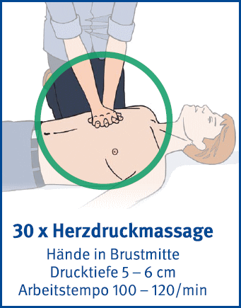

4 Herzdruckmassage
- Rückenlage auf harter Unterlage
- Oberkörper freimachen
- Handballen einer Hand auf die Mitte der Brust legen
- Handballen der zweiten Hand auf die erste Hand legen und die Finger verschränken
- Mit gestrecktem Arm das Brustbein 5 bis max. 6 cm nach unten drücken
- Brustbein nach jedem Druck entlasten
- 30 x Herzdruckmassage (Arbeitstempo: 100 – 120/min) im Wechsel mit 2 x beatmen
- Wiederbelebung bis Atmung einsetzt oder Rettungsdienst übernimmt
